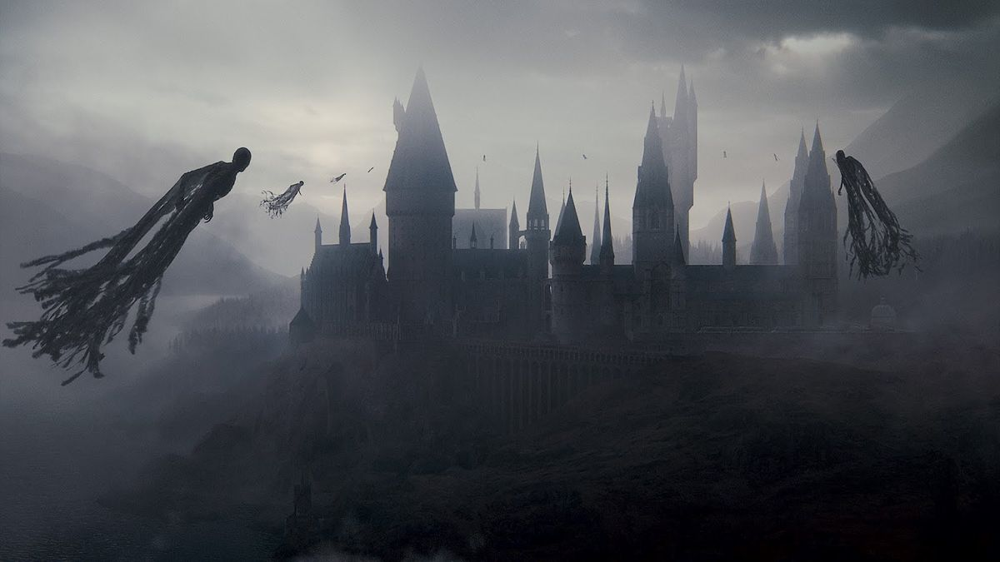

| Data De Lançamento | Diretor | Duração |
|---|---|---|
| 19 de novembro de 2010 (Brasil) | David Yates | 2h 26m |
A história acompanha Harry Potter, Ron Weasley e Hermione Granger após a queda do Ministério da Magia e o avanço do poder de Lord Voldemort. Harry precisa deixar a segurança de sua casa e embarcar em uma missão perigosa para encontrar e destruir as Horcruxes, objetos que guardam partes da alma de Voldemort e são essenciais para que ele seja derrotado. Enquanto procuram pelas Horcruxes, os três amigos precisam enfrentar diversos perigos e passam a viver escondidos, longe de Hogwarts. O filme mistura fantasia, aventura, suspense e drama, apresentando uma fase mais sombria da saga e mostrando Harry e seus amigos enfrentando grandes perdas e perigos enquanto se aproximam da batalha final contra Voldemort.
| Personagem | Ator/Atriz | Idade Atual |
|---|---|---|
| Harry Potter | Daniel Radicliffe | 37 anos |
| Rony Weasley | Rupert Grint | 38 anos |
| Hermione Granger | Emma Watson | 36 anos |
| Voldemort | Ralph Fiennes | 63 anos |
| Severus Snape | Alan Rickman | *69 anos |
| Neville Longbottom | Matthew Lewis | 37 anos |
| Bellatrix Lestrange | Helena Bonham Carter | 60 anos |
| Draco Malfoy | Tom Felton | 38 anos |
| Minerva McGonagall | Maggie Smith | *89 anos |
| Molly Weasley | Julie Walters | 76 anos |
| Narcissa Malfoy | Helen McCrory | *52 anos |
| Ginny Weasley | Bonnie Wright | 35 anos |
| Fread Weasley | James Phelps | 40 anos |
| George Weasley | Oliver Phelps | 40 anos |
Esse filme é uma das experiências mais diferentes da franquia. Sem Hogwarts como cenário principal, acompanhamos Harry, Rony e Hermione completamente isolados, tentando sobreviver enquanto carregam o peso de uma guerra que parece impossível de vencer.
Adoro como o filme transmite a solidão, o medo e o desgaste emocional do trio. A discussão entre Harry e Rony, a partida de Rony e seu retorno são fundamentais para mostrar que a amizade deles não é perfeita, mas é forte o suficiente para sobreviver até aos piores momentos. A animação de A História dos Três Irmãos é uma das escolhas artísticas mais bonitas de toda a franquia. É criativa, sombria e combina perfeitamente com o caráter quase lendário das Relíquias da Morte. A cena da dança entre Harry e Hermione também merece elogios. Ela não existe no livro, mas transmite uma tentativa delicada de aliviar a dor e o desespero daquele momento. Não interpreto a cena como uma mudança romântica entre os dois, mas como um instante de amizade em meio ao caos. Como leitora, porém, sinto falta de muita coisa. O livro desenvolve muito mais a busca pelas Horcruxes, as dúvidas sobre Dumbledore, o passado de Grindelwald e a investigação sobre as Relíquias da Morte. A história de Rony abandonando o grupo e depois retornando também possui nuances que poderiam ter sido mais exploradas. A morte de Edwiges foi modificada, e a ausência de algumas explicações torna certos acontecimentos menos significativos. O casamento de Gui e Fleur, a história de Monstro e as consequências do testamento de Dumbledore mereciam mais espaço. Ainda assim, acho que dividir o último livro em dois filmes foi uma decisão acertada. Essa primeira parte permite que a narrativa respire e que o público sinta o peso da jornada, em vez de correr diretamente para a batalha final.
Minha conclusão: um filme melancólico, corajoso e emocionalmente intenso. Não é sobre grandes batalhas o tempo todo; é sobre a resistência de três amigos que se recusam a desistir.